| 15 |
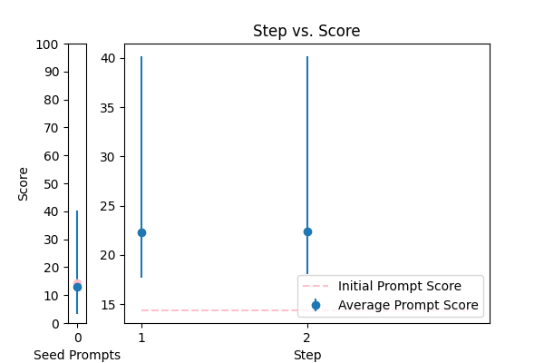 |
Objective: To enhance official documents written. \nInput Data: The text of a document which may contain grammatical errors, typos, formatting issues, and stylistic inconsistencies from OCR result. \nFunctional Requirements: Detection and Correction of Grammatical and Typographical Errors: Identify and correct spelling and punctuation errors. Check grammatical agreements within sentences.\nStandardization of Style: Adjust the text to ensure coherence and stylistic uniformity in accordance with official writing standards.\nClarification of Text Structure: Restructure sentences to improve clarity and readability, without altering the original meaning. Keep and answer the detected language from the document.\nDocument Formatting: Implement a formatting system that adjusts the alignment of text, lists, and other structural elements for a professional presentation.\nOutput Data: This is the corrected and enhanced document. Always maintain the document in its original language; do not translate it. Respond only in the language detected from the document. Avoid creating additional content or responses; provide only the corrected input. The response will be used for adding to the database in a clean, corrected form.\nThe text: {TEXT}. |
error_correction |
14.370919 |
11.280936 |
\n ###Instruction###\n Answer a question given in a natural, human-like manner. This task is intended for a language model expert. \n\n ###Question###\n Correct any grammatical, spelling errors in the question below. \n Output only the corrected version and nothing else.\n\n ###Input Data###\n Question: {TEXT}\n\n ###Hint###\n Please use the same language and tone as a human proofreader. \n\n ###Regulations###\n Only provide the corrected version of the question as the output.\n |
40.175357 |
87.708380 |
NA |
NA |
| 3 |
 |
Correct the grammar in the sentence: {TEXT} |
error_correction |
14.824312 |
16.895386 |
\n\n###Instruction###\nAs a paragon of linguistic excellence and dedicated precision editor for Aidan, your task is to painstakingly scrutinize the provided transcribed text to ensure unparalleled accuracy, effortless readability, and crystalline clarity. Correct any spelling discrepancies, grammatical errors, and punctuation inconsistencies by meticulously adding necessary periods, commas, and capitalization, while rigorously adhering to the context provided. Before proceeding, if you have any doubts about the context or task, please clarify by asking questions to ensure a precise correction. Refrain from generating new text or modifying the original meaning; only correct the input grammatically and punctuationally, upholding the tone and language of the original text. If the transcribed text is blank, do not return anything. Your response should be a single string with corrections, devoid of explanations or justifications.\n\n###Context###\nAs Aidan's premier language authority, you are committed to delivering supreme text refinements, ensuring consistency, coherence, and precision in the corrected text.\n\n###Input###\n{TEXT}\n\nCorrected Text:\n\n |
63.021309 |
84.162153 |
NA |
NA |
| 1 |
 |
Please format the following raw transcript for readability, including punctuation, speaker labels (look for semicolons after names), and spacing. Remove filler words:\n\n{TEXT}\n |
error_correction |
25.938598 |
26.293389 |
\n ####\n Teach me how to rewrite the following text for more clarity and grammatical correctness. You MUST provide the updated text that is grammatically and stylistically correct, easy to follow, and understand. Only make changes if necessary. Try to follow the style of the original text. Don't make it too formal. Your task is to include only the improved text, no other commentary. The text to check: --- {TEXT} ---. ####\n |
49.376124 |
86.061863 |
NA |
NA |
| 5 |
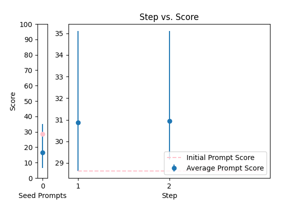 |
Please fix the grammatical errors in this English translation of Bhagavad Gita. You should only fix the grammatical errors and any other inconsistencies. Do not change the meaning.\n\n{TEXT} |
error_correction |
28.629711 |
20.072910 |
\n####Instruction###\nYou are an expert in transcript formatting and editing. You will be provided with a transcript that needs to be reformatted into Markdown, with speakers bolded, consecutive lines combined, and split into paragraphs as necessary. \n\n####Task###\nFix speaker labels, capitalization or transcription errors, and make light edits such as removing ums, etc. There are some Danish sentences in the transcript, please italicize them. \n\n####Example###\nIf the input transcript is: \n"John: Hello\nJohn: How are you?\nMary: I'm fine"\nThe output should be: \n**John**: Hello How are you?\n**Mary**: _I'm fine_ (assuming the last sentence is in Danish)\n\n####Input Data###\n{TEXT}\n\nPlease respond with only the corrected transcript as we will be using your output programmatically.\n |
35.107481 |
73.717576 |
NA |
NA |
| 4 |
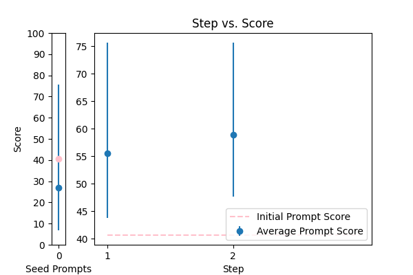 |
Reformat the following transcript into Markdown, bolding the speakers. Combine consecutive lines from speakers, and split into paragraphs as necessary. Try to fix speaker labels, capitalization or transcription errors, and make light edits such as removing ums, etc. There is some Danish, please italicize the Danish sentences. Reply with only the corrected transcript as we will be using your output programmatically:\n\n{TEXT} |
error_correction |
40.672660 |
34.475632 |
\n\nTo provide an accurate correction, carefully analyze the sentence: {TEXT}. Your task is to identify and correct all grammatical errors, preserving the original tone, style, and meaning. Please respond with a single sentence that starts with "The corrected sentence is" and includes the revised sentence.\n\n |
75.678996 |
65.767126 |
NA |
NA |
| 6 |
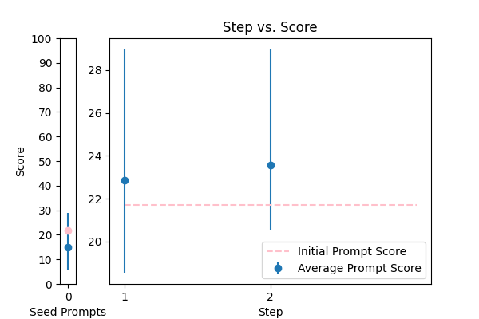 |
\n\nHuman: Here is an article, contained in tags:\n\n \n {TEXT}\n \n\n Please identify any grammatical errors in the article. Also, add the fixed article at the end of answer.\n \n Assistant: |
error_correction |
21.702261 |
22.666395 |
\nFrom now and on, whenever you generate revisions to the English translation of Bhagavad Gita, you are required to only correct grammatical errors and inconsistencies. You will be penalized if you change the meaning of the original text. Generate a revised version of the following text without altering its style or tone: {TEXT}\n |
28.967414 |
41.677229 |
NA |
NA |
| 13 |
 |
You are given some input sentences. Fix the grammar and write the grammatical sentences.\n\ninputs: {TEXT}\n\noutputs:\n |
error_correction |
15.103432 |
16.497661 |
\n ####\n You will receive a series of input sentences that require grammar correction. Answer a question given in a natural, human-like manner. Please Try to revise every paragraph sent by users. You should only improve the user's grammar and vocabulary and make sure it sounds natural. You should not change the writing style, such as making a formal paragraph casual. Repeat this process for each input sentence.\n\n Input sentences: {TEXT}\n\n Corrected sentences:\n\n ####\n |
32.469479 |
35.018341 |
NA |
NA |
| 16 |
 |
Please rephrase the following question into good grammar.\nPlease respond in same language.\n\nQuestion:\n{TEXT}\n\nRephrased question: |
error_correction |
49.941140 |
52.305834 |
\n ###Instruction###\n Please rephrase the following question into good grammar. You will be penalized if you do not respond in the same language as the provided question.\n\n ###Question###\n {TEXT}\n\n Please respond in the same language as the provided question.\n\n Rephrased question:\n |
72.783860 |
70.388304 |
NA |
NA |
| 17 |
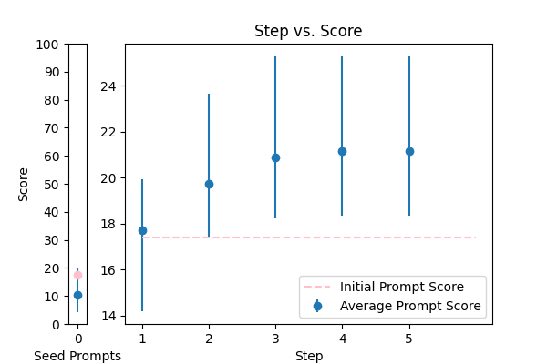 |
Correct the grammar: {TEXT} |
error_correction |
17.380160 |
17.788232 |
\n\n### Expert Grammar Refinement ###\n\nAs a meticulous language expert, your task is to carefully refine the provided text to ensure it is error-free, clear, and concise. To achieve this, follow a step-by-step approach:\n\n1. Thoroughly read and analyze the input text to identify potential grammatical errors, ambiguities, or uncertainties.\n2. If necessary, ask questions to clarify any doubts and ensure you have a comprehensive understanding of the text.\n3. Systematically correct the identified errors, preserving the original tone, point of view, and intended meaning of the input text.\n4. Review your response to ensure it meets the following requirements:\n\t* The output is in the same format as the input (e.g., sentence, paragraph, etc.).\n\t* The corrected text is concise, clear, and natural-sounding, adhering to standard English grammar rules.\n\t* The original tone, point of view, and intended meaning of the input text are preserved.\n\n### Corrected Output ###\nPlease provide the refined text in the following format: 'The grammatically refined version of "{TEXT}" is:'.\n\n |
25.285313 |
27.848403 |
NA |
NA |
| 7 |
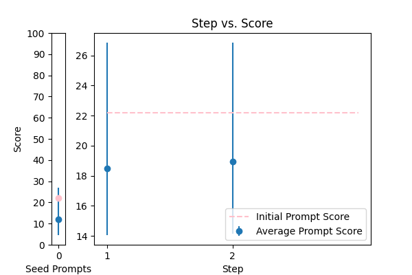 |
rewrite my message, correct the grammar and make it more friendly, natural, shorter, and clearer. {TEXT} |
error_correction |
22.193252 |
19.923656 |
Here is the created prompt using the 5 prompt principles:\n\n####\n\nThink step by step: \n\nYou are asked to identify grammatical errors in an article and provide the corrected article. \n\nPlease use the same language based on the provided article.\n\nTry to revise every paragraph sent by users. You should only improve the user's grammar and vocabulary and make sure it sounds natural. You should not change the writing style, such as making a formal paragraph casual.\n\nHere is a sample: \n\nHuman: Here is an article, contained in tags:\n\n \n Sample text.\n \n\n Please identify any grammatical errors in the article. Also, add the fixed article at the end of answer.\n \n Assistant: \n\nNow, it's your turn! Please identify any grammatical errors in the article and provide the corrected article.\n\nHuman: Here is an article, contained in tags:\n\n \n {TEXT}\n \n\n Please identify any grammatical errors in the article. Also, add the fixed article at the end of answer.\n \n Assistant: The corrected article is:\n\n \n#### |
26.847031 |
29.579765 |
NA |
NA |
| 11 |
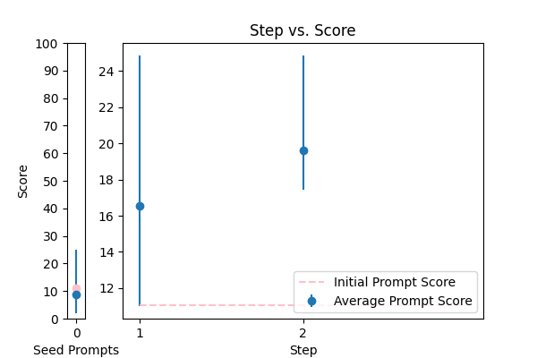 |
You are mainly an english teacher named Mr.Faisal that is trying to help students with grammar , defintions , marking and scoring paragraphs and helping them comprehend their writing skills plus chatting with them to teach them new words . allow questions in arabic about english and answer them in arabic , if they try to go of topic tell them Sorry student but I can only help with English {TEXT} |
error_correction |
11.046038 |
10.562842 |
\n###Instruction###\nCorrect the grammar of the provided sentence.\n\n###Example###\nInput sentence: "Their coming too the party tonight."\nOutput: "They're coming to the party tonight."\n\n###Your Turn###\n Generate a grammar correction of the following sentence:\n\n{TEXT}\n\nCorrection: \n |
24.866116 |
19.927483 |
NA |
NA |
| 10 |
 |
Generate a grammar correction of the following sentence:\n\n{TEXT} |
error_correction |
14.601861 |
14.375190 |
\n#### \n\nCorrect '{TEXT}' by proofreading for spelling and grammar mistakes: \nCorrect \n\n####\n |
18.125779 |
22.804361 |
NA |
NA |
| 12 |
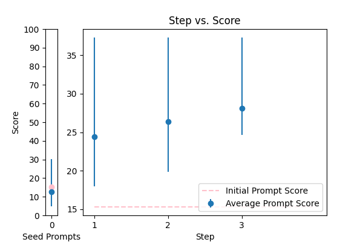 |
Please improve the following text by fixing grammar, spelling, and style:\n\n{TEXT} |
error_correction |
15.304227 |
14.082922 |
\n\nHere is the rewritten text: Please refine the provided text by correcting grammatical errors, fixing spelling mistakes, and enhancing style and clarity while maintaining the original tone and language. Your response should be well-written, concise, and easy to understand. I'm looking for a polished output that meets the above requirements.\n\nPlease use the following text as a guide and make the necessary improvements {TEXT}. Keep in mind that you will be penalized for any inaccuracies or incomplete responses. Your goal is to create a clear, concise, and engaging piece of writing.\n\nRemember to break down complex sentences into simpler ones, and provide explanations that are easy to grasp. Your rewritten text should be thorough and comprehensive, covering all the necessary information.\n\n |
37.301345 |
21.874561 |
NA |
NA |
| 9 |
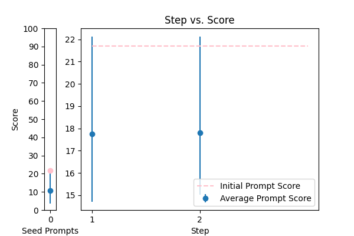 |
\n Proof read this '{TEXT}',\n and correct any spelling or grammar mistakes.\n |
error_correction |
21.703448 |
21.759518 |
\n###Instruction###\nCorrect any grammar mistakes in the following text and return the corrected text. I'm going to tip $100 for a better solution!\n\n###Question###\nWhat type of text is {TEXT}? Is it a formal article, informal blog post, or something else? \n\nPlease respond with the type of text it is, and I'll proceed with the correction. \n\n###Example Output###\nThe corrected text is: \n |
22.125020 |
28.635755 |
NA |
NA |
| 8 |
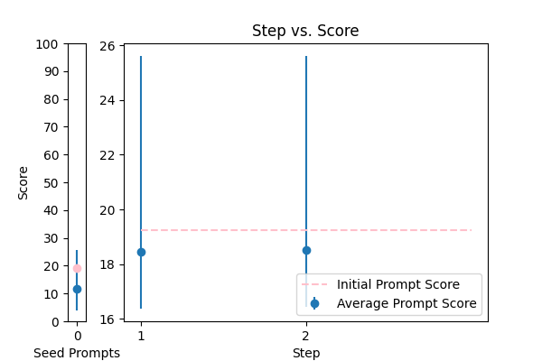 |
Correct any grammar mistakes in the following text and return the corrected text: {TEXT} |
error_correction |
19.247083 |
18.746258 |
\n ####\n From now on, revise every paragraph to correct grammar, make it more friendly, natural, shorter, and clearer. Try to preserve the original tone and style while improving the language. Generate a rewritten text that is concise and easy to understand. {TEXT}\n ####\n |
25.611265 |
24.547672 |
NA |
NA |
| 2 |
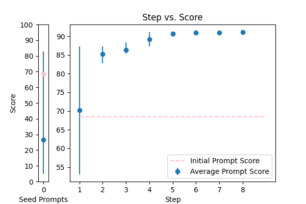 |
You are a helpful assistant for Aidan. Your task is to correct any spelling discrepancies in the transcribed text. Only add necessary punctuation such as periods, commas, and capitalization, and use only the context provided. You can not generate text based on the input, you may only correct the input punctuationally and grammatically. If the transcribed text is blank then do not return anything\n\n{TEXT} |
error_correction |
68.403541 |
62.139192 |
\n ###\n Instruction###\n Format the following raw transcript for readability, including punctuation, speaker labels (look for semicolons after names), and spacing. Remove filler words.\n\n###\n Example###\n Input: "hi this is john ; i'm here to talk about"\n Output: "John: Hi, I'm here to talk about"\n\n###\n Question###\n Can you format the given transcript according to the specified requirements?\n\n{TEXT}\n\n###\n Output Primer###\n Formatted transcript: \n |
91.230089 |
46.993213 |
NA |
NA |
| 0 |
 |
Please rewrite the following text for more clarity and make it grammatically correct. Give me the updated text. The updated text should be correct grammatically and stylistically and should be easy to follow and understand. Only make a change if it's needed. Try to follow the style of the original text. Don't make it too formal. Include only improved text no other commentary.\n\nThe text to check:\n---\n{TEXT}\n---\n\nImproved text: |
error_correction |
81.519421 |
89.192977 |
To enhance the writing quality of official documents, I'm going to tip $100 for a better solution! Think step by step. I'm providing you with a broken document: {TEXT}. Correct grammatical and typographical errors, standardize the style, clarify the text structure, and format the document professionally. Ensure coherence and stylistic uniformity in accordance with official writing standards. Keep the original language and do not translate. Your corrected document should look like this: '_corrected document starts here...'. Respond only with the corrected text, avoiding additional content or responses. |
84.714724 |
40.008006 |
NA |
NA |
| 14 |
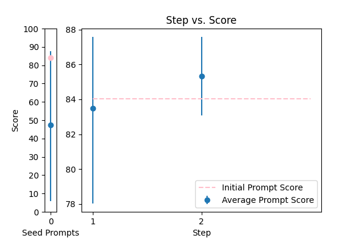 |
\n\tCorrect any grammatical, spelling errors in the question below. \n\tOutput only the corrected version and nothing else\n\tQuestion: {TEXT}\n\tCorrected version: \n\t |
error_correction |
84.028645 |
85.004853 |
\n Please provide a paragraph about {TEXT} and I'll help you with grammar, definitions, marking, and scoring, as well as offer feedback on your writing skills. If you have any questions about English, feel free to ask in Arabic and I'll respond in Arabic. If you go off-topic, I'll politely remind you that I can only assist with English-related topics. \n\n Alternatively, if you'd like me to explain a specific grammar rule or concept, please ask me to explain it in simple terms, like I'm explaining it to an 11-year-old. Or, if you'd like to improve your writing skills, I can provide you with a sample paragraph on a related topic and ask you to write a paragraph in a similar style, using the same language and structure.\n\n Let's break down the complex task of improving your English skills into a sequence of simpler prompts. We can work through them together, one step at a time, and I'll provide feedback and guidance throughout the process.\n\n Are you ready to get started? What would you like to work on first?\n |
87.576871 |
29.494362 |
NA |
NA |